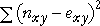
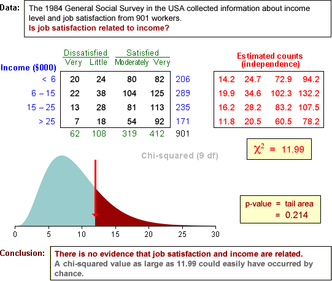
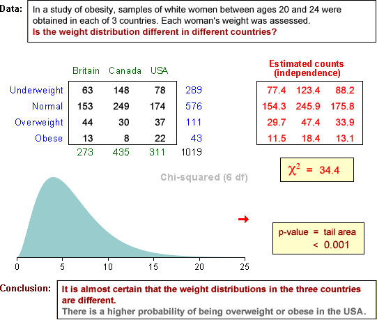

If you don't want to print now,
Bivariate data without an explanatory variable
In some bivariate categorical data sets, one variable can be treated as a response whose value depends on the other explanatory variable. The explanatory variable can then be used to split the individuals into groups.
In other bivariate data, the relationship between the variables is more symmetrical but we still want to discover whether particular values of one variable are associated with values of the other. A contingency table again summarises the data.
| Variable X | ||||
|---|---|---|---|---|
| Variable Y | X1 | X2 | X3 | |
| Y1 | 105 | 07 | 11 | |
| Y2 | 058 | 05 | 13 | |
| Y3 | 084 | 37 | 42 | |
| Y4 | 057 | 16 | 17 | |
Graphical display in a bar chart
If we do not want to classify the variables in a contingency table as a response and explanatory variable, the data can be displayed with a 3-dimensional bar chart.
Three-dimensional bar charts are 'interesting' but there are more informative ways to display the data.
Chartjunk and perspective displays
Beware of adding chartjunk and perspective viewpoints to the display — they just make it harder to understand the data.

Clustering bars in 2-dimensional bar chart
Rather than using a 3-dimensional bar chart, it is usually easier to assess the relationships between two variables from 2-dimensional bar charts. The bars can be clustered by either variable and it is often informative to examine both of these displays.

Marginal counts
Although our main interest is usually on the relationship between two categorical variables, it can also be of interest to examine the overall distribution of each variable separately. These are called the marginal distributions of the two variables and are determined by the row and column totals of the contingency table.
| Variable X | ||||||
|---|---|---|---|---|---|---|
| Variable Y | X1 | X2 | X3 | X4 | Total | |
| Y1 | 002 | 003 | 057 | 06 | 68 | |
| Y2 | 052 | 170 | 163 | 17 | 402 | |
| Y3 | 156 | 125 | 061 | 06 | 348 | |
| Y4 | 220 | 083 | 039 | 04 | 346 | |
| Total | 430 | 381 | 320 | 33 | ||
The row and column totals correspond to the heights of the stacks in stacked bar charts. For example, the above row totals are the heights of the stacks in the following diagram.

Marginal proportions
In a similar way, the marginal proportions for the variables are obtained by adding the cell proportions across rows and down columns.
 and
and 
Spliting into groups
If the values of X are used to split the individuals into groups, the conditional distributions of Y given X are the distributions within each of these groups. They are found by dividing the cell counts by the totals for each such group. The columns of the table below show the conditional distributions for a contingency table, expressed as percentages.
| Variable X | |||||
|---|---|---|---|---|---|
| Variable Y | X1 | X2 | X3 | X4 | |
| Y1 | 000.5 | 000.8 | 017.8 | 018.2 | |
| Y2 | 012.1 | 044.6 | 050.9 | 051.5 | |
| Y3 | 036.3 | 032.8 | 019.1 | 018.2 | |
| Y4 | 051.2 | 021.8 | 012.2 | 012.1 | |
| Total | 100.0 | 100.0 | 100.0 | 100.0 | |
The conditional distributions of X given Y are similarly found by using Y to create the groups of individuals. They are found by dividing the cell counts by the totals in the other margin of the original contingency table.
| Variable X | ||||||
|---|---|---|---|---|---|---|
| Variable Y | X1 | X2 | X3 | X4 | Total | |
| Y1 | 02.9 | 04.4 | 83.8 | 8.8 | 100.0 | |
| Y2 | 12.9 | 42.3 | 40.5 | 4.2 | 100.0 | |
| Y3 | 44.8 | 35.9 | 17.5 | 1.7 | 100.0 | |
| Y4 | 63.6 | 24.0 | 11.3 | 1.2 | 100.0 | |
Both tables of conditional proportions (or percentages) are often informative.
Conditional distributions of X given Y and Y given X
The conditional proportions for X given Y can be quite different from the corresponding conditional proportions for Y given X and you must be careful to distinguish between them.
As an extreme example, under 5% of women are pregnant at any time, but 100% of pregnant people are women!
Conditional and marginal distributions
The distinction is between the marginal distribution for a variable and its conditional distributions is illustrated for the following contingency table that describes bruising of 96 apples in a packing plant.
| OK | Bruised | |
|---|---|---|
| Granny Smith | 40 | 8 |
| Fuji | 24 | 24 |
The diagram below shows the apples, arranged in rows by variety.

Observe that:
The apples can be rearranged as follows:

Now observe that:
Relationships
The relationship between two numerical variables can be summarised by a correlation coefficient and least squares line. Two categorical variables may also be related.
We say that two categorical variables are associated if knowledge of the value of one tells you something about the likely value of the other.
If the conditional distribution of Y given X = x depends on the value of x, we say that X and Y are associated.
Example
We illustrate the idea of association with an artificial example relating athletic performance of high school children to their weight. The table below shows the joint probabilities for these children.
| Athletic performance | ||||
|---|---|---|---|---|
| Poor | Satisfactory | Above average | Marginal | |
| Underweight | 0.0450 | 0.0900 | 0.0150 | 0.1500 |
| Normal | 0.0825 | 0.3025 | 0.1650 | 0.5500 |
| Overweight | 0.0500 | 0.1200 | 0.0300 | 0.2000 |
| Obese | 0.0300 | 0.0650 | 0.0050 | 0.1000 |
| Marginal | 0.1700 | 0.5400 | 0.2900 | 1.0000 |
A proportional Venn diagram displays the conditional probabilities for performance, given weight category, graphically.

If we know that a child has normal weight, there is a higher probability of having above average athletic performance than an overweight child. Since the conditional probabilities for performance, given weight are different for different weight categories, the two variables are associated.
Independence
If the conditional probabilities for Y are the same for all values of X, then Y is said to be independent of X.
If X and Y are independent, knowing the value of X does not give us any information about the likely value for Y.
Example
An example of independence is given by the following table of joint probabilities for the weight category and mathematical ability of high school children.
| Mathematical performance | ||||
|---|---|---|---|---|
| Poor | Satisfactory | Above average | Marginal | |
| Underweight | 0.0225 | 0.1125 | 0.0150 | 0.1500 |
| Normal | 0.0825 | 0.4125 | 0.0550 | 0.5500 |
| Overweight | 0.0300 | 0.1500 | 0.0200 | 0.2000 |
| Obese | 0.0150 | 0.0750 | 0.0100 | 0.1000 |
| Marginal | 0.1500 | 0.7500 | 0.1000 | 1.0000 |
The proportional Venn diagram for this model is shown below.

The conditional probability of above average maths performance is the same for all weight categories — knowing a child's weight would not help you to predict maths performance. The two variables are therefore independent.
Mathematical definition of independence
If Y is independent of X, then:
Assessing independence from a sample
Independence is an important concept, but it is defined in terms of the joint population probabilites and in most practical situations these are unknown. We must assess independence from a sample of individuals — a contingency table.
Example
The contingency table below categorises a sample of 214 individuals by gender and some other characteristic (possibly weight group or grade in a test).
| Male | Female | Total | |
|---|---|---|---|
| A | 20 | 60 | 80 |
| B | 9 | 84 | 93 |
| C | 2 | 39 | 41 |
| Total | 31 | 183 | 214 |
Is this consistent with a model of independence of the characteristic and gender? (Are the probabilities of A, B and C grades the same for males and females?)
Estimated cell counts under independence
To assess independence, we first find the pattern of cell counts that is most consistent with independence in a contingency table with the observed marginal totals.
| Male | Female | Total | |
|---|---|---|---|
| A | ? | ? | 80 |
| B | ? | ? | 93 |
| C | ? | ? | 41 |
| Total | 31 | 183 | 214 |
The pattern that is most consistent with independence has the following estimated cell counts:

where n denotes the total for the whole table and nx and ny denote the marginal totals for row x and column y.
Applying this to our example gives the following table:
| Male | Female | Total | |
|---|---|---|---|
| A |  |
80 | |
| B | 93 | ||
| C | 41 | ||
| Total | 31 | 183 | 214 |
Comparison of observed and estimated cell counts
We test for independence with the hypotheses:
H0 : X and Y are independent
HA : X and Y are dependent
The test asks whether the observed and estimated cell counts are 'sufficiently close' — are the observed counts consistent with the counts estimated under independence?
| Male | Female | Total | |
|---|---|---|---|
| A | 20 (11.59) |
60 (68.41) |
80 |
| B | 9 (13.47) |
84 (79.53) |
93 |
| C | 2 (5.94) |
39 (35.06) |
41 |
| Total | 31 | 183 | 214 |
Possible test statistic?
A simple summary of how close the observed counts, nxy, are to the estimated cell counts, exy, is the sum of the squared differences,

Unfortunately this would be a bad test statistic — its distribution depends not only on the numbers of rows and columns in the table, but also on the number of individuals classified — the overall total for the table. A better test statistic is presented in the next page.
A better test statistic
The following χ2 (pronounced chi-squared) statistic has much better properties than the raw sum of squares on the previous page

Its distribution only depends on the number of rows and columns in the contingency table.
Distribution of chi-squared statistic
When there is independence, the χ2 statistic for a contingency table with r rows and c columns has approximately a standard distribution called a chi-squared distribution with (r - 1)(c - 1) degrees of freedom.
The mean of a chi-squared distribution equals its degrees of freedom and it is skew. Some examples are given below for contingency tables of different sizes:

Testing for independence
H0 : X and Y are independent
HA : X and Y are dependent
The following test statistic is used:

P-value

The p-values is interpreted in the same way as for other hypothesis tests — it describes the strength of evidence against the null hypothesis:
| p-value | Interpretation |
|---|---|
| over 0.1 | no evidence against the null hypothesis (independence) |
| between 0.05 and 0.1 | very weak evidence of dependence between the row and column variables |
| between 0.01 and 0.05 | moderately strong evidence of dependence between the row and column variables |
| under 0.01 | strong evidence of dependence between the row and column variables |
Warning about low estimated cell counts
The χ2 test statistic has only approximately a chi-squared distribution. The p-value found from it can be relied on if:
If the cell counts are small enought that these conditions do not hold, the p-value is less reliable. (But advanced statistical methods are required to do better!)
Examples


Contingency tables and groups
Contingency tables can either arise from bivariate categorical data or from univariate categorical data that is recorded separately from several groups.
The chi-squared test assesses independence in bivariate data. The same test can also be used to compare the different groups if there is grouped data.
Example
